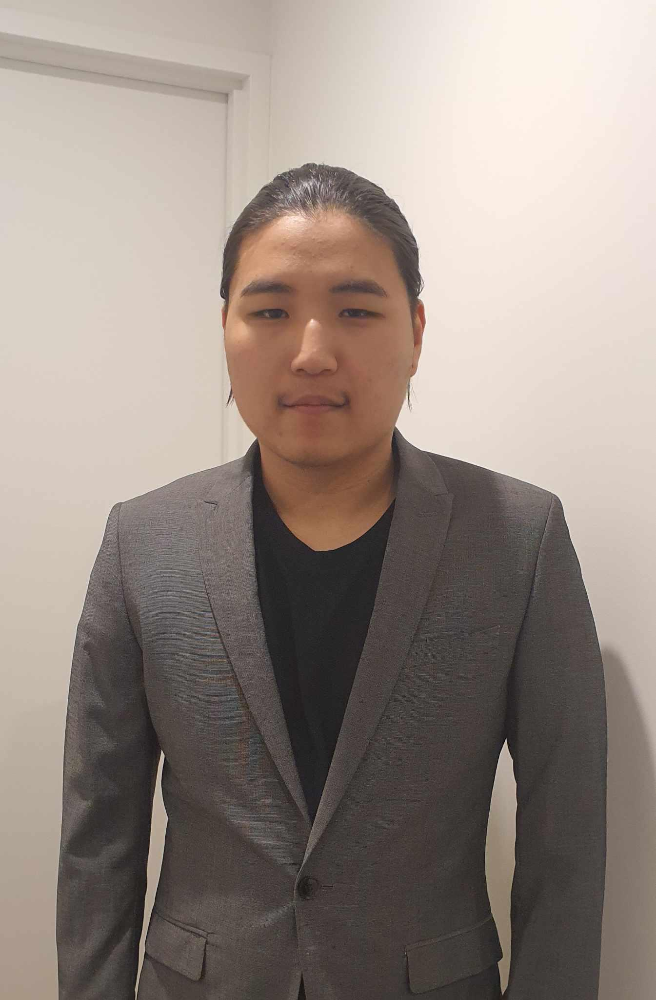

I'm aspiring Software Engineer andcurrently completing a Bachelor of Engineering (Honours) in Software Engineering at Macquarie University. Outside of my coursework, I spend most of my time building small games, tools and websites for my personal projects and interests. In the past, I've worked on various projects such as 2D shooter in Unity, modelling in blender and unreal engine,a Java-based file management system with encrypted storage and multiple websites based on free online API's. I'm a fast learner, hardworker and I am comfortable leading a team or wporking independently, solving a problem on my own. I am native/fluent across Mongolian and English. As for my programming skills, I am proficient in C#, Java, Python, HTML, CSS and JavaScript. I have a strong interest in game development and web development, and I am always looking for new challenges and opportunities to learn and grow as a developer. My hobbies include reading, gaming, watching movies and TV shows, cooking, playing music, drawing and sports.

Bachelor of Engineering (Honours) — Software Engineering
Year 9–12, completed HSC (Year 12)
Year 1–9
Handle table service, phone orders, and front desk. Calculate daily sales and manage cash handling, alongside desk service, cleaning, and occasional kitchen support.
Prepared cold and hot buffet items including salads, fried food, and ramen. Also covered kitchen-hand duties and front-of-house sales.
Onsite advertising roles and client interactions based on oppizi contracts.
Volunteered around Okinawa, Osaka, and Nara making and selling charity items and helping the local community.
Packaged clothes and food donations for people in need, and built wooden projects for animal shelters.
Recognised for achievement in mathematics and science, plus a Student Council member award.
Awarded for media research and production work.